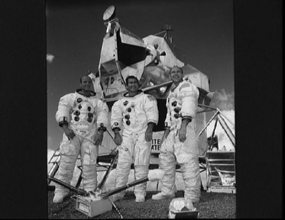

Высадка в Океане Бурь
Вторая высадка американцев на Луну состоялась в ноябре 1969 года. Ажиотаж, связанный с полетом «Аполлона-11», несколько угас, поэтому новая лунная экспедиция проходила в гораздо более спокойной обстановке.
Много лет спустя исследователи подсчитали количество и объем публикаций, а также время телевизионных трансляций, посвященных «Аполлону-11» и «Аполлону-12». Получились очень интересные цифры. Оказывается, об «Аполлоне-12» было в 8 раз меньше статей в газетах и журналах, а их общий объем был меньше в 25 раз. Американское телевидение посвятило второй лунной высадке в 15 раз меньше эфирного времени. Америка очень быстро насытилась разговорами о лунной программе и вернулась к своей обычной жизни.
Старт «Аполлона-12» с астронавтами Чарльзом Конрадом, Ричардом Гордоном и Аланом Бином на борту состоялся 14 ноября 1969 года. Спустя трое суток астронавты уже были на селеноцентрической орбите и стали готовиться к высадке. Местом прилунения был выбран тот район Океана Бурь, в котором двумя годами раньше прилунился автоматический аппарат «Сервейор-3». Поход к нему должен был стать одной из основных задач экспедиции.
Прилунение прошло по той же схеме, что и у «Аполлона-11». Сразу после посадки астронавты проверили бортовые системы лунного модуля. Конрад потом вспоминал: «Когда ты прилуняешься, тебе не до поздравлений. Первые мысли, как системы? Остаемся? Улетаем? Идет время. К счастью, Хьюстону не требуется много времени – остаемся! Дальнейшую радость нельзя описать, ни один из садившихся на Луну не помнит вообще, что он делал в эти минуты».
Через четыре с половиной часа после посадки астронавты были готовы открыть люк и выйти на лунную поверхность. Это была первая прогулка. А всего Конраду и Бину предстояло дважды оставить свои следы в лунной пыли.
Ступив на грунт, Чарльз радостно закричал: «Оп-па! Может, для Нейла это был маленький шаг, а для меня – длинный». Конрад был на голову ниже Армстронга.

Экипаж космического корабля «Аполлон-12»: Алан Бин, Ричард Гордон, Чарльз Конрад
Позже психологи долго изучали причину перевозбуждения командира лунной экспедиции. Его даже подозревали в приеме алкоголя. Но, вероятнее всего, причина не в этом. Просто, покинув кабину, Конрад увидел, где сел лунный модуль. Коснись грунта чуть левее или на 1–2 секунды раньше, аппарат просто «поплыл» бы по сыпучему склону кратера. И тогда взлететь было бы практически невозможно. Вот Конрад и радовался предоставленному ему шансу «пожить еще немного».
Программа первого выхода была расписана по минутам: сбор аварийного запаса образцов лунного грунта, беглый осмотр лунной кабины, переправка из внешнего контейнера в кабину лунного модуля аккумуляторов и патронов с гидроокисью лития для перезарядки скафандров, установка кинокамеры (ее Бин случайно направил на Солнце и больше она не работала), водружение американского флага (как же без этого!), развертывание комплекта приборов ALSEP. График работы был столь напряженный, что время работы на лунной поверхности пришлось продлить на 30 минут.
Возвращались в кабину весело: нервное напряжение отпустило, астронавты вели себя раскованно. Обсуждали камни, давали им немыслимые прозвища, разыгрывали геологов в Центре управления полетов. Так разошлись, что Земле пришлось призвать экипаж к серьезности.
Ночь не спали. Кроме эмоций, мешали скафандры, которые не разрешили снять (на всякий случай), лунная пыль, которую занесли в кабину. Да и нельзя сказать, что внутри модуля было так уж тепло. А тут еще вода из нательной системы охлаждения протекла командиру в ботинок. Тем не менее наутро и Конрад, и Бин чувствовали себя достаточно бодро.
Второй выход на поверхность предусматривал поход к «Сервейору-3». Астронавтам предстояло снять с него некоторые элементы конструкции, чтобы на Земле специалисты могли изучить, как на них воздействовали космическое и солнечное излучения, микрометеориты, глубокий вакуум, жуткие перепады температуры. По дороге собирали образцы камней.
Увлеклись настолько, что. заблудились. Решили подняться на склон ближайшего кратера и осмотреться. С вершины были хорошо видны и родная лунная кабина, и «Сервейор». Даже издали вид автоматической станции озадачил астронавтов. Они работали с макетом станции и хорошо помнили, что она была белого цвета. На Луне же их встретил коричневый «Сервейор». Все разъяснилось, когда Конрад и Бин подошли к аппарату. Оказалось, что его покрывает тонкий слой пыли, которая и придавала такой оттенок. Когда перчаткой скафандра пыль счистили, астронавты вновь увидели белый «Сервейор». Аппарат тщательно сфотографировали со всех сторон и в деталях. Засняли и траншею, которую он выкопал своим совком.
А потом астронавты начали «курочить» «Сервейор-3». Демонтаж начался с проблемы: станция оказалась не только «перекрашенная», но и «подмененная», не такая, как тренажер на Земле. Кабели и трубы лежали совсем по-другому. И все-таки Конрад и Бин справились со своей задачей. Они нашли подходящий кабель и вырезали из него кусок, «откусили» фрагмент полированной алюминиевой трубки, отделили камеру, отломили ковш. Хотели взять образец стекла, но оно рассыпалось в прах. Все остальное только отсняли на пленку.
Возвращение к лунному модулю потребовало гораздо меньше времени, чем путь к «Сервейору-3». Приходилось спешить, чтобы не выбиться из графика. Бин первым влез в кабину и принял грузы от Конрада, который забрался следом. «Добыча» составляла 33,9 килограмма камней, детали автоматической станции, фотокассеты.
Пробыв на Луне 31 час 31 минуту, астронавты отправились на встречу с поджидавшим их на орбите Гордоном. Возвращались к Земле по «накатанной» дорожке. 24 ноября «Аполлон-12» приводнился в Тихом океане.